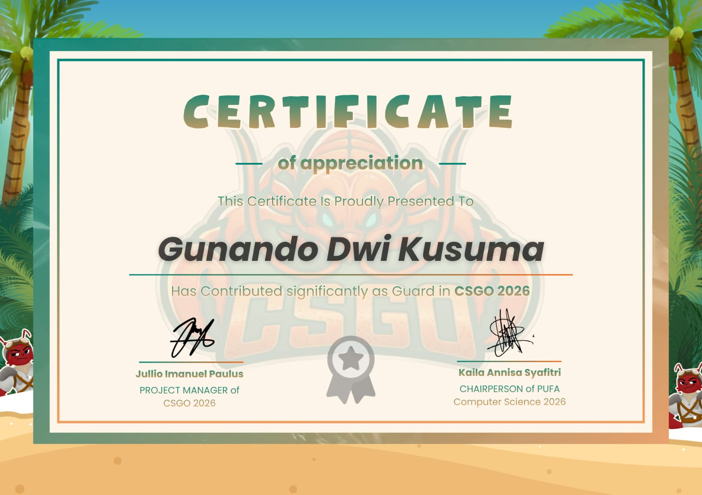
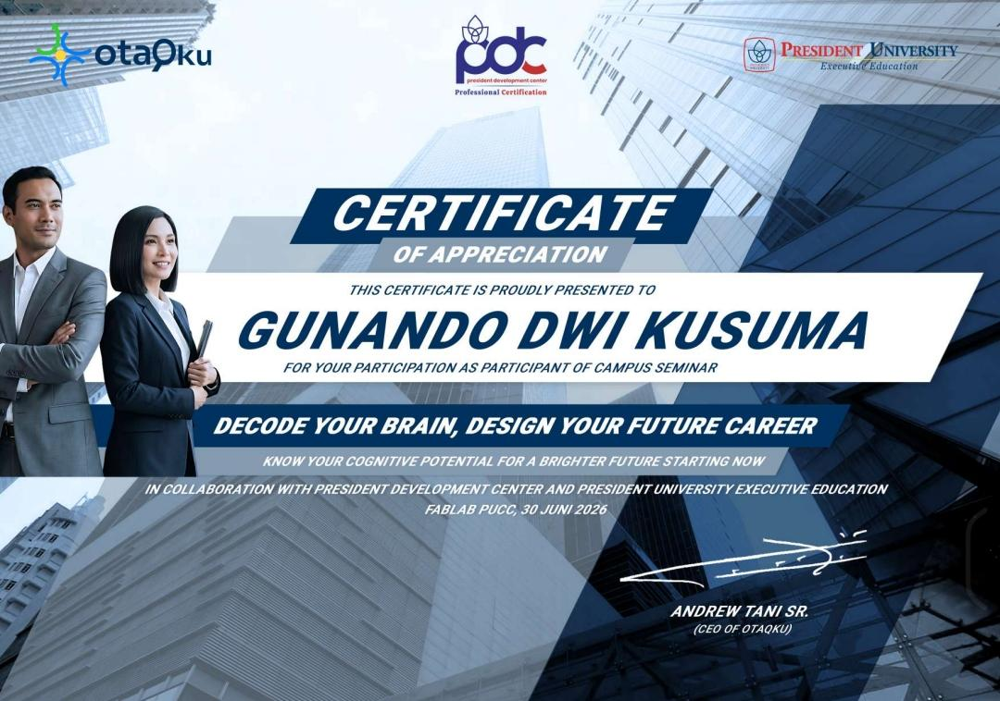
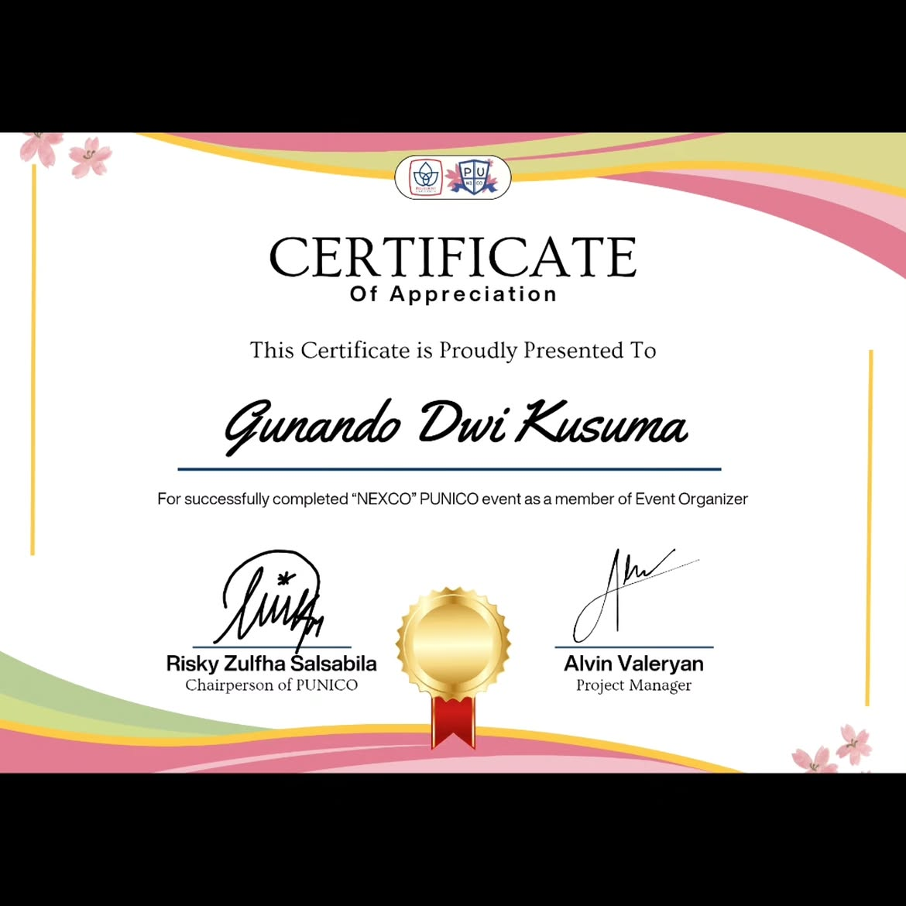
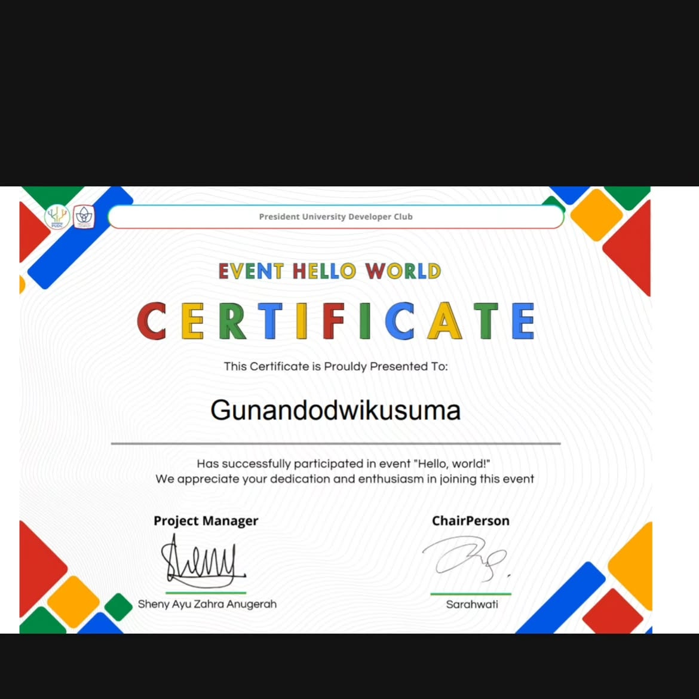
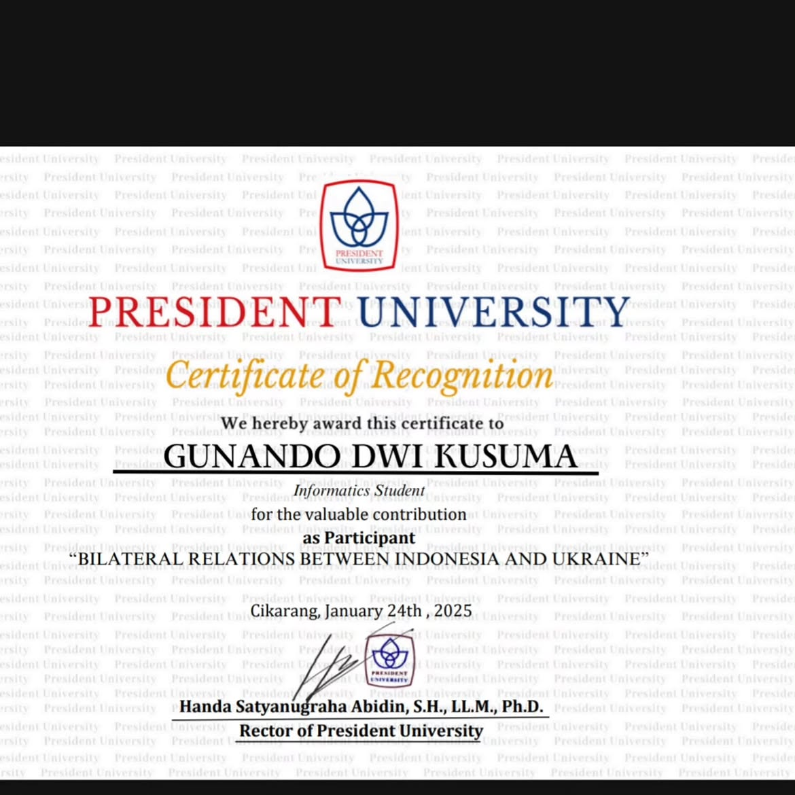
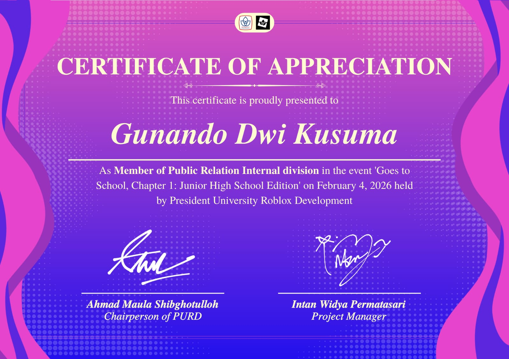

01
Vocal Victory 2025
Member of Guard, President University Vocal Victory.
A clean archive of participation, appreciation, recognition, and organization certificates collected across university events and creative technology activities.
Each certificate is presented as a clear visual record. Open any item to inspect the full-size image.
Member of Guard, President University Vocal Victory.

Guard contribution in Computer Science gathering activity.

Participant of campus seminar in collaboration with President Development Center and President University Executive Education.

Completed NEXCO PUNICO event as member of Event Organizer.

Participation in Event Hello World by President University Developer Club.

Participant in Bilateral Relations Between Indonesia and Ukraine.

Public Relation Internal division member in PURD Goes to School activity.